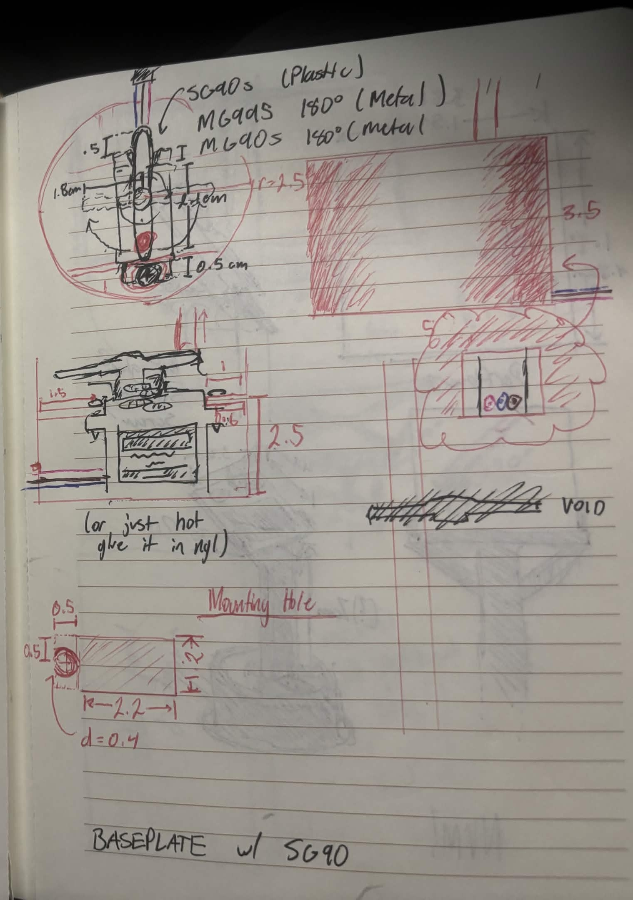
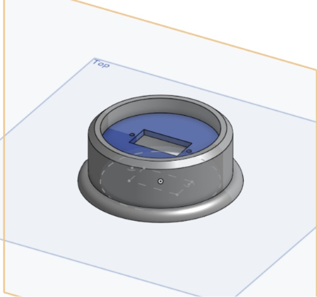
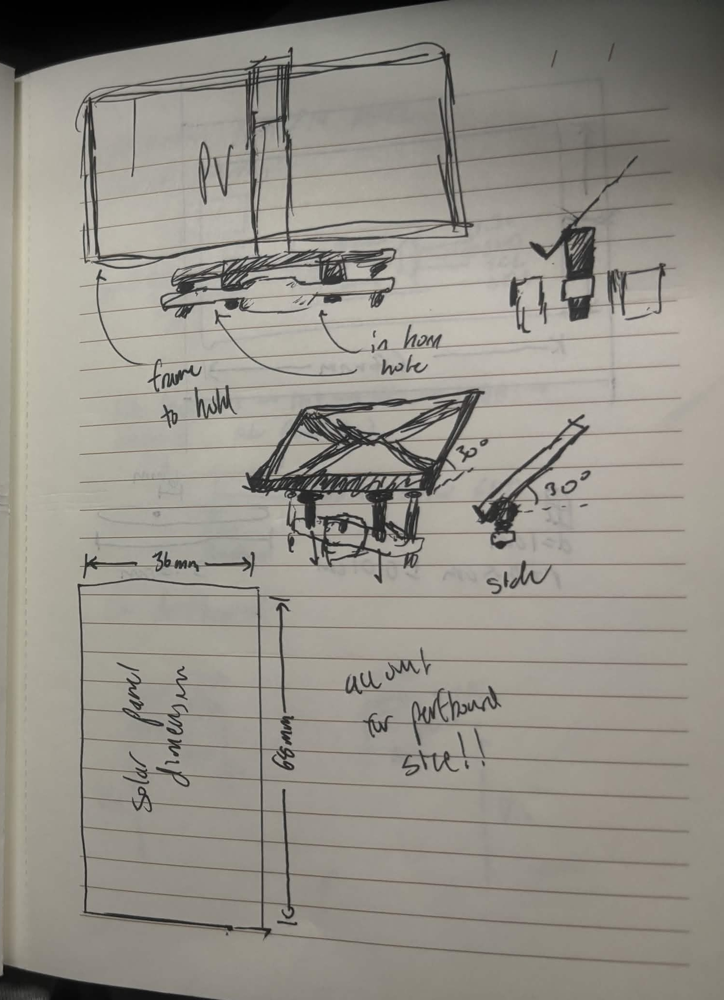
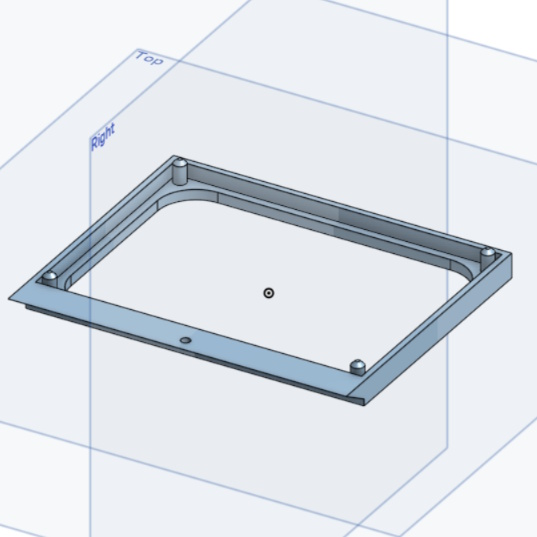

Background
This was my first "big" project when it came to Electrical Engineering, and it was
specifically built for my EE1301 Introduction to Computing Systems final project. I've
always had an interest in renewable energy, and I thought that a cool simple project
that I create was a small solar panel that tracked a light! I went into it
thinking it was going to be smooth sailing, but of course, with every engineering
project, it was NOT as smooth as I thought. Below, I'll describe the
technical details of the project, then outline my design process, wrapping up
with some lessons I learned throughout the way.
Technical Details
To start with the boring details (or interesting),
this project uses the Particle Photon 2 as a microcontroller,
running C++ code and also allowing IoT communication. The panel
itself is a Buachois 0.3W 5V 60mA solar panel I found on Amazon,
and it does the job. It's soldered onto a perfboard with some other
components. The panel is mounted on a SG90s micro servo, powered by a 6V Battery Pack,
that rotates using logic from two PDV-P8103 light-dependent resistors, separated by
a divider (a card, because I forgot to 3D print one) to increase the contrast.
Essentially, the LDR analog output values are compared to determine
the source of the brightest light, and the servo rotates towards it;
nothing too crazy. A hystersis of 50 was used to reduce jittering of
the servo, because the analogRead() values would fluctuate a lot.
if (autoTracking == true)
{
// LDR Loop
if (now_ms - prev_ms_LDR >= interval_LDR)
{
prev_ms_LDR = now_ms;
// Calculate the difference in light
ldrLVal = analogRead(LDR_L_PIN);
ldrRVal = analogRead(LDR_R_PIN);
ldrDelta = ldrLVal - ldrRVal;
// Send signal to move accordingly
if (ldrDelta > HYSTERSIS)
{
lightDetected = LEFT; // move servo left
servoPos -= 0.5;
servoPos = constrain(servoPos, 1, 179);
servo.write(servoPos);
// Serial.println("LEFT");
}
else if (ldrDelta < -(HYSTERSIS))
{
lightDetected = RIGHT; // move servo right
servoPos += 0.5;
servoPos = constrain(servoPos, 1, 179);
servo.write(servoPos);
// Serial.println("RIGHT");
}
else
{
lightDetected = CENTERED;
servoPos += 0;
servoPos = constrain(servoPos, 1, 179);
servo.write(servoPos);
// Serial.println("CENTERED");
}
}
The power output is measured through a voltage divider, using
2x10K Ω resistors to calculate the voltage, and estimate the
power output and current through the load. To calculate the values,
I just used Ohm's Law (V = IR) and Power = V^2 / R. First, the
voltage is read through the voltage divider, using analogRead(),
and converted into the actual voltage, then multiplied by two
to undo the voltage divider and calculate the real voltage output.
The current and power were divided by the resistance, and then multiplied
by 1000 to convert to mA and mW, being more appropriate for this tiny
solar panel. After submitting the final project, I realized that my
calculations were incorrect for the power and current, as they should be
divided by 20,000 Ω, not 2,000 Ω, which is unfortunate.
voltage = analogRead(VDIV_PIN) * (3.3 / 4095) * 2;
current = (voltage / 2000) * 1000;
power_mW = ( (voltage * voltage) / 2000) * 1000;
To allow for manual control, I implemented a potentiometer that
controls the angle of the servo relative to the output from the
potentiometer. A button was also used to toggle between AUTO and MANUAL
input. Lastly, with the help of some resources from the internet and
Claude, I created a small dashboard that displayed the power output,
communicated via the cloud using the Particle Photon 2.
I also created a wiring schematic in KiCad, seen below. All of these files,
including the .cpp and .html file, can be found on my
Github page!
Design Process
Right after my professor explained the assignment to us, I
excitedly got to work on sketching some ideas up— a little
embarrasing, but gotta admire the drive that Zac from March had to make a tiny
little project. My first sketches were pretty rough, as I tried
to figure out the placement of parts and what parts I actually
needed for this thing to work. The original design had pretty
similar parts, but was intending to use a DFRobot SEN0291 INA219
power monitor (more details later on why that DIDN'T work.) I also
completely overestimated the size of this project, as I wanted to use
two micro solar cells, which just wasn't realistic. Another large debate
I had was the positioning of the panel, and how it would be placed on
the servo motor.
I was also trying to figure out the dimensions of the baseplate that
would house the servo, as this solar panel needed some way to stand.
I figured that the best way would be to design a small cylindrical
base in OnShape, and 3D print it using the UMN's 3D printers. The
servo would be mounted on this baseplate, and I hoped for the best
when it came to servo fitting correctly. This was my first time
using OnShape, and as a first time user, I gotta say it's quite
nice and easy to learn, so props to you OnShape! (These files can also be found on the Github Page
here.)


The last 3D print I needed was a frame to hold the perfboard
and solar cell, and after making a couple of sketches, the
finalized design was the CAD render, again made on OnShape,
on the right side. This was the second variation due to some
errors with my first print, which I'll describe some more
below. I left an open back on the frame so I could easily
connect wires onto leads on the back of the perfboard, and
also decrease the weight of the frame slightly.
I think the hardest part of this process was figuring
out a method to mount the frame onto the servo motor, but
I opted for a small screwhole on the center that would
screw into the servo, instead of attaching it onto a servo
horn as I intended when sketching.


My first prints did work well enough with the servo motor, as
you can see below, which is a small clip of the servo
being tested with no panel attached to it yet. This design was
alright, but it quickly fell apart when it came time to
wiring the components together, and trying to keep the
perfboard strapped onto the frame. Those reasons are why
I decided to make some tweaks to the CAD model and
reprint them to fix some issues of mounting.
Regardless, enjoy this fun gif.
Time for the real fun stuff... Electronics! Yeah, this part
was not a lot of fun because of all the issues I ran into
while trying to wire this thing up. Unfortunately, I also
didn't take too many photos of the wiring process, so
I apologize for that.
My first order of business was figuring out the
layout of the perfboard and solar cell. Prior to
this project, I've had soldering experience with
both electronics and real and larger solar cells
(Shoutout UMNSVP Array), but man, getting this
thing to work was hell. My first attempt at
soldering the perfboard and the components onto
it was a failure, due to either cold solder joints,
or some other random reason I don't know about.
You can see this mess to the left, which was slightly
disassembled at the time of this photo to try and
recover some components.
So, I started fresh and soldered my second solar cell onto my second perfboard,
and this one actually worked. Phew.
This time, it was much better. Much cleaner connections here, and I decided to
rely on solder bridges instead of all wires in order to connect components
together. The red wires carried 3V3 voltage used in the LDR logic, which was
connected to the Photon 2's 3V3 rail. The blue wires held common GND
for the LDRs and the solar cell, connected to the GND rail of my
breadboard. The leads for the DATA lines for the
LDRs actually broke off in this photo, but those were connected
directly to the Photon 2. Lastly, the solar cell's 3V3 lead was
connected to the voltage divider in order to read the power output!
You may also notice the new 3D printed frame, with screw holes using
M2 screws to mount the perfboard onto the frame. Nice.
Here's a short little clip of me testing the rotation
of the servo reacting to the flashlight of my phone camera!
I was still tweaking the settings for rotation speed and
sensitivity at this point, but I was pretty proud of this prototype.
Now listen, I know it isn't pretty, but the breadboard wiring got the job done.
If I had more time, I would definitely rework this wiring hell and clean it
up a bit, but this is all I had by the time it was due, unfortunately.
Regardless, if you can somehow follow the logic here, here are
some of the important connections. The 6V battery pack connects
to the servo power pin, and the servo is also connected to GND and it's
data pin on the Photon 2. The orange wire is connected to the solar cell's
positive lead, and connected to the voltage divider. The bottom left
breadboard expansion contains the controls for the manual rotation, with a
LED that turns on when in manual mode. The other wires connect to the
LDRs, 3V3, GND, etc.
I ended up scrapping the DFRobot SEN0291 INA219 due to some issues with the I2C connection.
For some reason, and I still don't know why, the SEN0291 just wasn't being read
through the I2C connection, and none of the data was being sent. It was strange
because it worked for my first couple tests, then when I resoldered the
perfboard, it completely stopped working, which was the most frustrating part
of this project. Never the less, I ended up opting for a voltage divider to
get a rough estimate of the power output instead of ordering another SEN0291.
What I Learned
This is what the project finally ended up looking like. With the
DIY divider in the middle and rats nest of a breadboard layout,
it looks a little ragtag, but that's okay.
The biggest skills I learned from this project was how to
prototype a design and iterate, fixing errors along the way and
finding solutions to my problems. This little project was actually
really hard to make, not because of the complexity, but just because
of all of the minor errors I kept making and obstacles that popped up.
Other than that, I learned how to use OnShape, create good solder
connections, write C++ code for the Particle Photon 2, and more.
To end this with a funny story: I was trying to showcase this project
to my parents after coming home from the EE1301 showcase, but as soon as
my mom tried to watch my demonstration, it completely stopped working because God
knows why. Lesson learned, don't let your parents in on your projects, I guess.